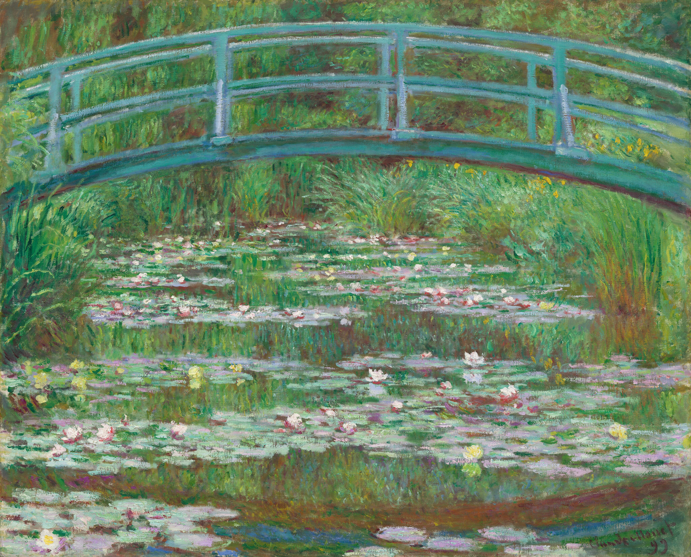

1840
Nascimento
Claude Monet nasce em Paris, França, em 14 de novembro.
Claude Monet (1840–1926) foi um dos principais nomes do Impressionismo. Em suas obras, explorou a luz, as cores e as mudanças da natureza, buscando capturar não apenas uma paisagem, mas a sensação de observá-la em determinado momento.

Claude Monet nasce em Paris, França, em 14 de novembro.
Ainda jovem, Monet começa a se dedicar seriamente à pintura e conhece Eugène Boudin, que influencia seu interesse por pintar paisagens ao ar livre.
Monet passa a experimentar novas formas de representar a luz e a natureza, afastando-se das convenções acadêmicas da época.
Monet passa a experimentar novas formas de representar a luz e a natureza, afastando-se das convenções acadêmicas da época.
Monet se muda para Giverny, onde cria seu famoso jardim. O local se torna uma de suas principais fontes de inspiração.
Produz algumas de suas séries mais famosas, como Haystacks, Rouen Cathedral e Water Lilies, explorando como a luz transforma uma mesma cena.
Monet morre em Giverny, aos 86 anos, deixando uma das obras mais influentes da história da pintura moderna.